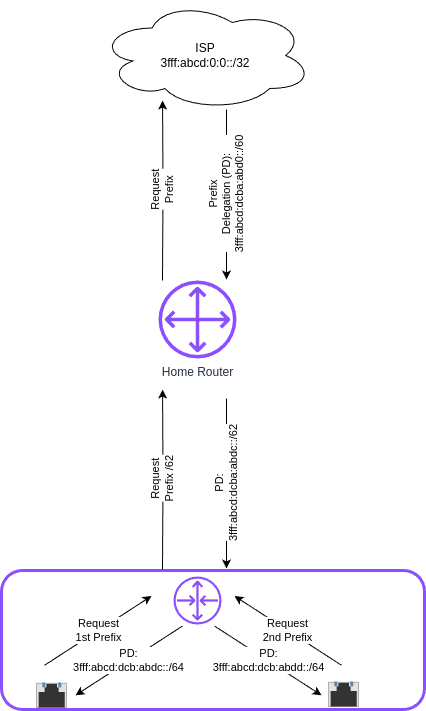

IPv6 prefix delegation using systemd-networkd


Introduction
Recently my ISP (Internet Service Provider) finally provided me with modern IPv6. I at least got an /60 prefix, which allows me to do subnetting, with up to 16 subnets, as the network identifier in IPv6 has 64 bits. So far so good. But I soon realized, that my prefix changes frequently, just as the IPv4 prefix. That however is a problem. I do have two VLANs, beside my default network, that need their own GUA (Global Unicast Address) prefix. So whenever my prefix changes I would need to change my VLAN configurations and my routes. That's not feasible.
Gladly there is a solution to that problem: IPv6 Prefix delegation (PD).
How it works
With legacy DHCP you can automatically provide IPv4 addresses and other configuration information to clients. With modern ICMPv6 you can of course do the same. But there is more: With PD you can provide whole network prefixes to a device.
That's actually how you get your IPv6 prefix from your ISP. Your Home router request a Prefix from the ISP's DHCPv6 server. The ISP's DHCP server answers with a prefix of a certain length it delegates to your Home router. The good thing now is, that (given your Home router supports IA_PD) you can use an internal router (e. g. a Linux machine) to request itself a portion of this prefix to again provide whole networks e. g.  for VLANs, as in my scenario.

The individual Interfaces of the downstream router can now themselves request a /64/ network and an IPv6 address in that network.
Set up
This is how my network currently looks:

My Home router gets a /60 IPv6 prefix which changes every few days. To that Home Router I connected a managed switch, so I can have VLANs. The firewall, DHCP(v6) server und router for these VLANs live on a Raspberry Pi, that functions as a router on a stick: It is connected to the switch on a trunk port and has 2 virtual devices for the two VLANs — Office (VLAN Id 10) and WLAN (VLAN Id 20).
My Wifi access point is connect on an access port configured for VLAN 10 on my switch. The Office VLAN so far only contains my desktop Office PC.
Configuring the Home router
First you have to find out if and where you can enable the DHCPv6 option IA_PD on your Home router. On my Home router (called Fritz!Box) the menu looks like this an is found under Home Network → Network → Network Settings → IPv6 Settings.

Configuring the Raspberry Pi router
Next we need to configure the internal router. As mentioned I use a Raspberry Pi, but the following steps should work on most modern Linux distributions and any PC hardware. You might prefer a device with more power and more importantly more bandwidth.
I first referred to the Debian wiki to get an idea on how to do this. I decided to settle on systemd-networkd to configure my interfaces. I run Raspberry Pi Os, which is based on Debian bookworm. It uses NetworkManager for network management.
systemd-networkd is however installed. So I decided to first configure everything, before disabling NetworkManager.service and enabling systemd-networkd.service.
Configuring the WAN interface
I started with my physical interface, which naturally acts as my WAN interface:
The first line are the general setup. In the section [Match] you have to provide the interface name, as setup by the system. Here it is eth0, on other systems it might be something like enp0s16f0u1. Next you have to specify the interface type which is ether for a wired ethernet link. For a wifi interface it would be wlan. There are other options to match your interface, e. g. the MACAddress.
/etc/systemd/network/10-eth0.network
[Match] Name=eth0 Type=ether
Next comes the [Network] section, starting with a description. You can put anything here.
[Network] Description=WAN Ethernet port
Now comes the first (slightly) interesting part. We tell networkd to use DHCPv6 to get an IPv6 address and — more importantly — to accept IPv6 Router Advertisements (RA). IP forwarding should also be activated on all interfaces on a router.
DHCP=ipv6 IPv6AcceptRA=yes IPForward=yes
In this section we also have to configure which VLANs we want to associate with this physical interface.
VLAN=Office VLAN=WLAN
You most likely want to run dual stack. You should use static addressing for the legacy IP address that matches the network you'r in, e. g.:
[Address] Address=192.168.178.254 Gateway=192.168.178.1
Don't forget the IPv4 default route. As we use Prefix Delegation for IPv6 you do not need to set any routes there. It is done by DHCPv6 for us.
[Route] Gateway=192.168.178.1
So finally there comes the part, where we configure IA_PD for the WAN interface:
- PrefixDelegationHint:
- You need to specify the size of the prefix, you want to get. It must be bigger the the prefix you got from your ISP, but at least
/64, which would however mean, you can only provide 1 subnet downstream. Normally it is recommend to observe the nibble boundaries, which means you take steps of 4 bits, so on hex digit stands for one step in your network hierarchy. As I only got a/60I only have one nibble to work with. I decided that 4 subnets should be enough for now and settled on a/62.1 - UseDelegatedPrefix:
- This option activates the use Prefix Delegation and should be set, although it seems to work without it.
- UseAddress:
- This is kind of optional but it suppresses some warnings about addresses not being used.
[DHCPv6] PrefixDelegationHint=::/62 UseDelegatedPrefix=yes UseAddress=no
Configuring the Virtual LAN devices
The next step is to set up the virtual devices for the VLANs. For that we need to create a .netdev for each VLAN under /etc/systemd/network/. These virtual devices must be created first before the physical device is configured, so the filename should start with 00-.
The files need two section:
- [NetDev]:
- Define a virtual device with a
NameofKindvlan. - [VLAN]:
- In this section the
VLANIdis defined. This must be a number between 1 and 4096. It must match the VLAN Id configured on the managed switch.
[NetDev] Name=Office Kind=vlan [VLAN] Id=10
Lastly a .network file must be created for each VLAN in the same directory. The number these files start we must be greater than the one the .network file for the physical starts with. I settled on 20-.
It starts with a [Match] section, just as the .network file for physical interface. The Name to match is that configured for the virtual LAN device in the .netdev file. The Type must be set to vlan.
If you use physical Interfaces instead, use Type of ether or wlan~.
[Match] Name=Office Type=vlan
In the [Network] section is the place where some DHCPv6 option must be configured:
- DHCP=ipv6:
- We want to use DHCPv6.
- IPForward:
- IP forwarding should be activated for both IPv4 and IPv6.
- IPv6SendRA:
- We want to send Router Advertisements, so the devices in the
- IPv6AcceptRA:
- We also need to accept Router Advertisments from upstream.
- DHCPPrefixDelegation:
IA_PDmust also be activated.
[Network] Description=Office VLAN interface DHCP=ipv6 IPForward=yes IPv6SendRA=yes IPv6AcceptRA=no DHCPPrefixDelegation=yes
Again a legacy address should be provided for dual stack.
[Address] Address=172.16.10.1/24
Finally an [IPv6PrefixDelegation] section is need. You can decide whether your Unique Local (Unicast) Addresses (ULAs). It doesn't hurt, although they will not actually be used, as legacy IPv4 is preferred over IPv6 for private addressing.
The second option is more important. With SubnetId you can configure which of the available subnets you want to use. It's the number of the subnet in hexadecimal numbering. So 0x1 would be the first 0xf would be the 15th subnets if you have so many to choose from.
[IPv6PrefixDelegation] ULA=true SubnetId=0x1
Disabling NetworkManager and enabling systemd-networkd
Now it's time to move from NetworkManager to systemd-networkd:
sudo systemctl disable --now NetworkManager.service sudo systemctl enable --now systemd-networkd.service
I recommend also checking that everything works by running:
systemctl status systemd-networkd
Which should look something like this:
● systemd-networkd.service - Network Configuration
Loaded: loaded (/lib/systemd/system/systemd-networkd.service; enabled; preset: enabled)
Active: active (running) since Sat 2025-06-14 21:02:05 CEST; 14h ago
TriggeredBy: ● systemd-networkd.socket
Docs: man:systemd-networkd.service(8)
man:org.freedesktop.network1(5)
Main PID: 97581 (systemd-network)
Status: "Processing requests..."
Tasks: 1 (limit: 9564)
CPU: 583ms
CGroup: /system.slice/systemd-networkd.service
└─97581 /lib/systemd/systemd-networkd
You may also check if you got the expected prefixes with:
ip --brief a
Configure Firewall
It might however be, that you don't get an address on your inbound ports. This could be because ports 547 used by ICMPv6 on the server side und 546 used on the client side are blocked. In this case you need to add the following rule to your input filter chain with nftables.
iifname "eth0" udp sport 547 udp dport 546 accept comment "Allow DHCPv6 from server to client"
If you don't feel comfortable with nftables, you might use ufw on a Debian based system:
sudo ufw allow in on eth0 proto udp from any port 547 to any port 546 comment 'Allow DHCPv6 from server to client'
Or you could use firewalld-cmd on a Red Hat based system:
sudo firewall-cmd --permanent \ --add-rich-rule='rule family="ipv6" \ source address="::/0" \ protocol value="udp" \ port port="547" protocol="udp" \ destination-port port="546" protocol="udp" \ interface name="eth0" \ accept'
Conclusion
With this setup all my downstream machine get their IPv6 addresses in their VLAN with the correct prefix, no matter how often my ISP changes it. All routes are configured automatically and I don't have to care about any of this any more.
This once again proves, that IPv6 is more advanced and more simple then legacy IP(v4).
Footnotes:
Each extra bit halves the number of possible subnets. So /61 would give me 8, /62 4, /63 2, and /64 1 possible subnet.